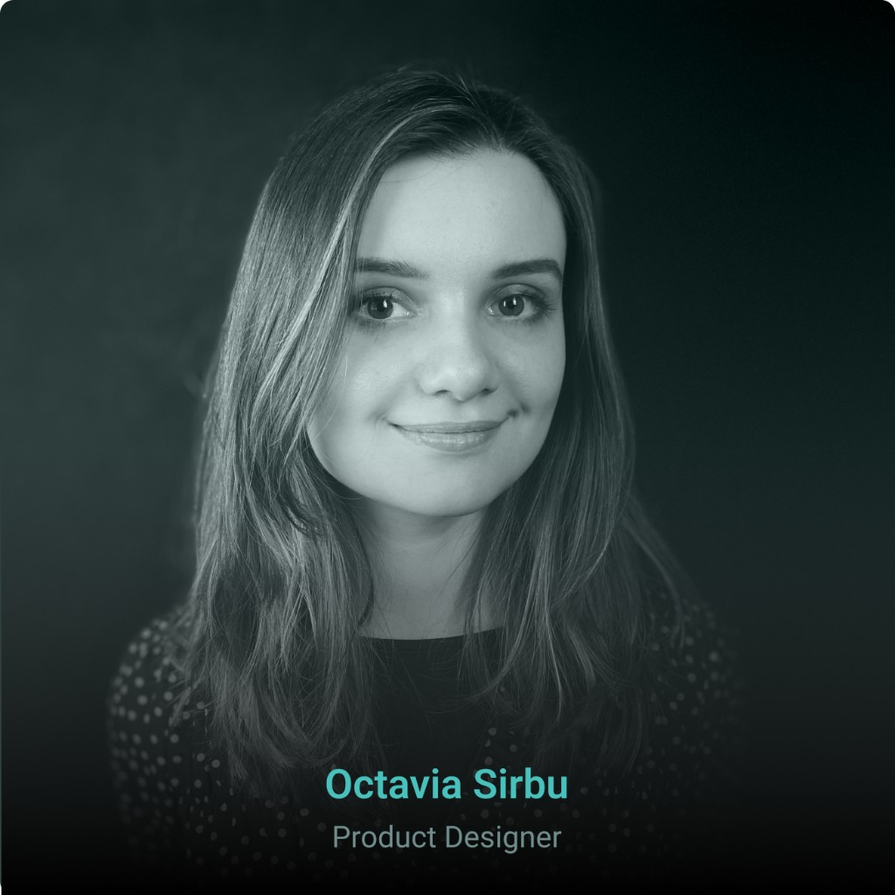
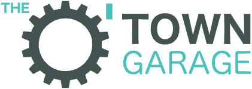
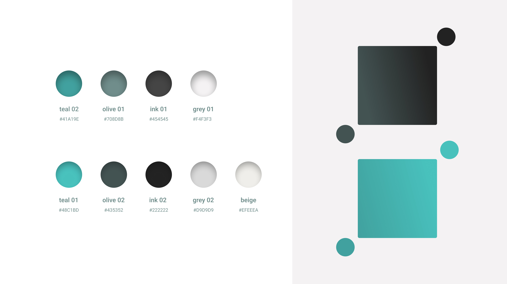
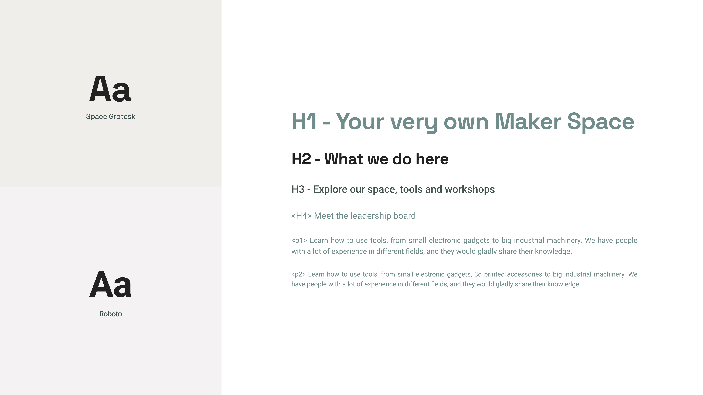

Summary
- My role in the project
- Impact of new design
- Visual design (logo, colors, type, icons)
- Photography of the space and people
- Wireframes
- Website design
My role
- UX / UI Design of responsive website
- Web development of the website
- Collaboration and hand-off to developer
- Branding and visual identity (colors, type and logo)
- Content strategy and SEO
- Photography and visual content


The O'Town Garage is a makerspace located in Odense, Denmark. Anyone can become a member and in doing so they gain access to equipment for laser cutting, 3D printing, wood work and much more. At the makerspace, members help and exchange knowledge with each other which creates a strong community of people who share similar passions and interests.
Impact of new design
- The new website made it simpler for people to find relevant information which resulted in no more emails and calls asking for missing information
- Better placement in search results which led to 2x / 200% more traffic
- Better navigation resulting in no more manual intervention to help members with their admin (member page)
- The webpage is a professional presentation of The O'Town Garage that inspires confidence to potential sponsors and supporters



